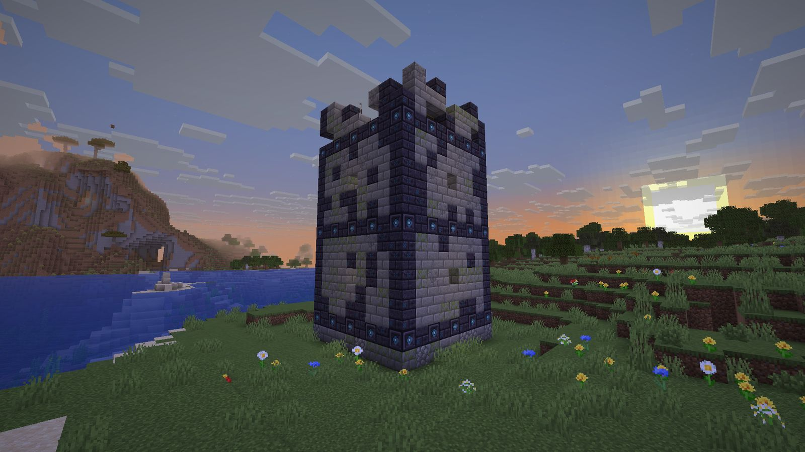
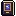
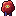

Arcane Library
Vanilla enchanting is a slot machine. Here knowledge picks the enchantment, a roll picks its power, and effort improves the roll.
Modpack makers: use the CurseForge download, not the GitHub one. CurseForge is the official distribution for modpacks; GitHub Releases is for manual installs and testing.
Earn the what, then the how strong
You learn enchantments from tomes found in the Arcane Library, an endless dimension of streets, stacks and vaults kept by things that don't want you there. At the Arcane Lectern you choose what to inscribe and spend Lumen Dust to roll for its level, then refine the roll as far as your mastery allows.
Knowledge, not luck
Every tome teaches one enchantment, vanilla or modded, at Glimpsed, Studied or Mastered. What you know is yours: per player, kept through death.

A roll you can steer
Inscribe rolls a power level. Refine rerolls and keeps the better result. Mastery, a Quill of Insight and Lumen Dust all tilt the odds.

An endless dimension
Build a portal of Inscribed Bricks and step into arcane:library: reading rooms, orreries, vaults, and a Restricted Section beyond the fourth ring.

The Archivist
A three-phase boss where every attack is telegraphed and counterable. Break its tether behind a pillar. Step off the erased floor.
Works with other mods
Everything reads the enchantment registry, so other mods' enchantments can be learned, inscribed and deconstructed. Modpacks can tune tome pools with tags.
No dependencies
Just NeoForge. Install on the client, and on the server too when you play on one.
The loop
- Find a Ruined Librarian Tower in the Overworld. Its top-floor chest holds a Book of Portals, Lumen Dust, Inscribed Bricks and your first tome.
- Build a portal frame of Inscribed Bricks and use the Book of Portals on it.
- Explore the Library, loot tomes, brush suspicious bookshelves, survive the keepers.
- Study a tome to learn its enchantment, then inscribe it at the Arcane Lectern.
- Go deeper: the Restricted Section, Mastered tomes, and the Archivist.
A look inside


Explore the site
Description
What the mod is, how it plays, the dimension, the enchantments, config and compatibility.
Bestiary
All ten keepers, every variant, and the Archivist's moves.
Recipes
Every crafting recipe with a grid, plus where the rest comes from.
Guides
Getting started, the roll calculator, surviving the Library, beating the boss, modpack notes.
Showcase
Screenshots of the world, the Lectern, the keepers and the Archivist.
Community
Questions, ideas and finds go to GitHub Discussions; bugs to the issue forms.